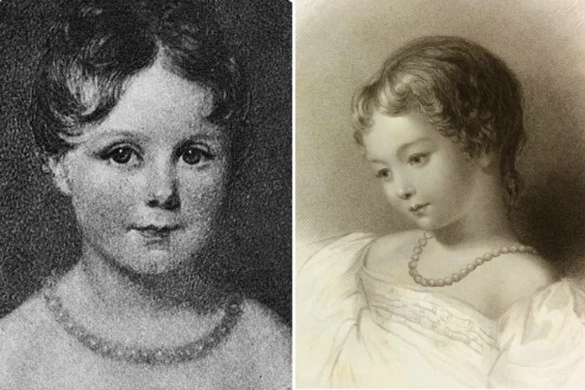

Биография
Детство и юность

Августа Ада Кинг, графиня Лавлейс, урождённая Байрон, появилась на свет 10 декабря 1815 года в Лондоне. Её отцом был известный английский поэт Джордж Байрон.В воспитании Ады он не принимал никакого участия.В детстве Ада была очень болезненным ребёнком.Её мучили частые головные боли, которые привели к проблемам со зрением. После перенесённой кори девочка на долгое время оказалась прикованной к кровати, однако физические недуги не мешали развитию её умственных способностей. Любовь к математике Ада унаследовала от матери. Видя способности Ады, мать обеспечила ей прекрасное образование, наняв самых лучших учителей в Лондоне.
Знакомство с Бэббиджем
В возрасте 17 лет Ада познакомилась с выдающимся английским математиком Чарльзом Бэббиджем, профессором на кафедре математики Кэмбриджского университета. Несмотря на большую разницу в возрасте, они быстро нашли общий язык — этих двух людей объединила страсть к математике. Вскоре Бэббидж опубликовал свою работу, в которой привёл описание счётной машины, способной производить вычисления с точностью до двадцатого знака. Денег на реализацию смелого проекта у учёного не было, и Ада привлекла все свои связи, чтобы математик смог получить грант от государства. Строительство вычислительной машины продолжалось десять лет, и с каждым годом её конструкция всё более усложнялась. В 1833 году финансирование прекратилось, и Бэббидж был вынужден самостоятельно искать средства на развитие своего детища.
Первая программа
Во время чтения лекции в Туринском университете Бэббидж поведал студентам о своей машине. Эту лекцию тщательно законспектировал на французском языке и впоследствии опубликовал юный инженер Луиджи Менабреа. В 1842 году друг Бэббиджа попросил Аду Лавлейс перевести записи Менабреа, сопроводив текст собственными комментариями. Девушка с азартом приступила к работе, и спустя год выдала готовый перевод с личными заметками на 52 страницах. Она не только смогла вникнуть в гениальную идею изобретателя, но и объяснить принцип работы механизма. Во время перевода в голове леди Лавлейс возникла идея использования вычислительной машины Бэббиджа. Она описала алгоритм, по которому можно было вычислять числа Бернулли. Интересным фактом является то, что в дальнейшем работу Ады Лавлейс признали первой программой, которую можно воспроизводить на компьютере.
Личная жизнь
При изучении краткой биографии Ады Лавлейс следует упомянуть не только её острый ум, но также яркую внешность и женское обаяние, благодаря чему её личная жизнь сложилась весьма удачно. Сочетание ума и красоты привлекало к Аде много поклонников, но её избранником стал Уильям Кинг, 8-й барон Кинг, который вскоре после свадьбы в 1835 году унаследовал титул лорда Лавлейса. В этом браке родилось трое детей: сыновья Байрон и Ральф и дочь Анна Изабелла. Помимо математики, большим увлечением Ады стали скачки, на которые она тратила огромные суммы. Страсть к азартным играм стала серьёзным испытанием для четы Лавлейс. Скончалась Ада Лавлейс 27 ноября 1852 года. Причиной смерти молодой женщины стала сильная кровопотеря во время лечения опухолевого заболевания.